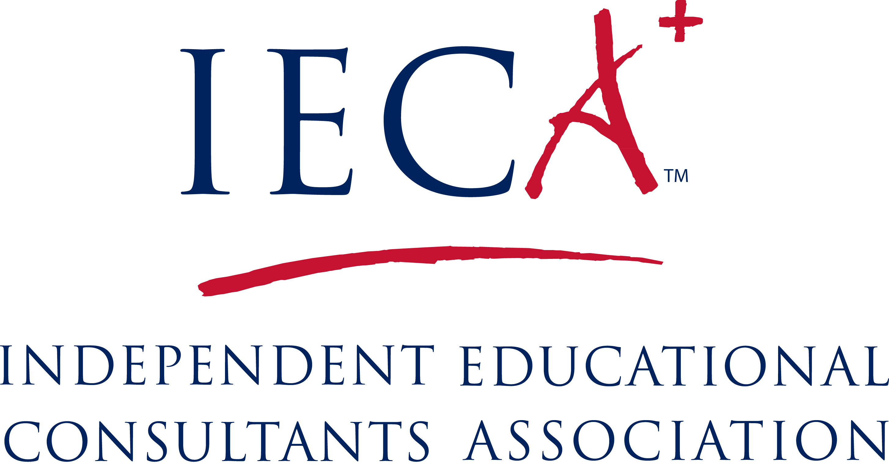
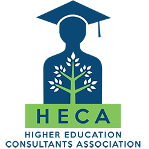
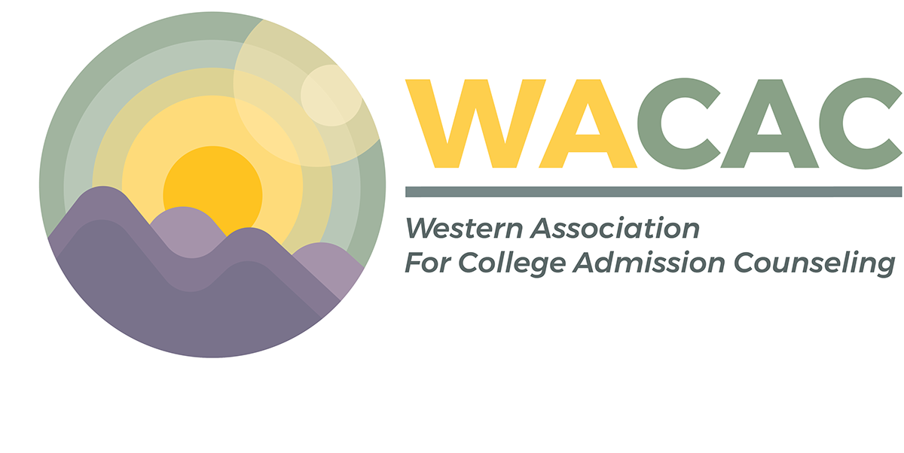

Lily Hu
College Admission Consulting and Chemistry Tutoring
After spending 15+ years as a researcher in the biotech
and pharmaceutical industry, I chose to follow my passion to work with students. I have been volunteering as a tutor and college admission coach at College Track, and received my Certificate of College Admission Counseling from UCLA.
I received my Certificate of College Admission Counseling from UCLA with distinction, also became an associate member of
IECA (Independent Educational Consultants Association) and a member of HECA (Higher Education Consultants Association).
My Approach
I dedicate myself to providing a personal and caring approach to helping high school students who are seeking higher education admission success. I work with a small number of students each year to make sure I give each student personal attention. I guide students all the way through the college search and application process. I recognize each student's unique learning style, skills, talents, and needs, and I tailor my approach accordingly.
Service Summary
- Review students' profiles and provide advice on high school course selection
- Provide recommendations for extracurricular involvement
- Give personalized testing recommendations
- Conduct in-depth interviews with students and parents on college preferences
- Recommend a personalized college list
- Guide students through the college application process across different platforms (Common App, UC, Coalition, etc.)
- Advise students on college visits
- Prepare students for admissions interviews
- Help students with essay brainstorming, drafting, and revision
- Encourage students to maintain a positive outlook on different college options
- Be the students' cheerleader!
Affiliations
  
I follow "The Statement of Principles of Good Practice" set by the NACAC and honor the core values set by the association: Professionalism, Collaboration, Trust, Education, Fairness and Equity, and Social Responsibility.
Chemistry Tutoring
I hold a M.S. in Organic Chemistry and B.S. in Chemistry, and have multiple years of experience as a medicinal chemist in the biotech and pharmaceutical industries. I am a co-inventor of several patents.
I tutor students in varying levels of chemistry courses:
- High School Regular Chemistry
- High School Honors Chemistry
- High School AP Chemistry
- Organic Chemistry
Volunteer Involvement
- Tutor and College Admission Coach at College Track (a nonprofit organization founded by Laurene Powell Jobs to serve students from low-income families)
- Mentor for AAR (Advanced Authentic Research) in the Palo Alto Unified School District, with a special focus on chemistry and life-sciences research
- PiE (Palo Alto Partners in Education) representative for Gunn High School
Testimonials
"I am currently going to Purdue and I don’t think I would be where I am now without Lily’s help. When I was completely
lost at the beginning, she helped guide me to figure out what I wanted to do, what kind of school I wanted, and where
and tried to find the best options. I don’t feel like she pushed me towards big name schools just because they sound
good on paper, but instead tried to find what fits me the best. Whenever I needed help or had a question, she would
respond really quickly by email and would give plenty of details."
- Izabela B. (Student)
"Lily's knowledge about Gunn High School's curriculum is exceptional. When we bring up a college/university for consideration, Lily can immediately talk at length about different aspects of it. My daughter really trusts and respects her advice. She has a passion for what she is doing -- we can tell!"
- Maggie (Parent)
"Dear Lily, Thank you so much for helping me this year! I really appreciate your patience and how dedicated you are to
helping me do my best!"
- Nora (Chemistry student)
"Dear Lily, Thank you for all your hard work and dedication with helping me on my college application! I appreciate your
patience and taking the time to help me with my essays, QuestBridge and scholarship applications!"
- Anthony R. (Admitted to USC)
"Dear Lily, I am so excited to tell you that I got a full score on my chemistry SAT Subject test! I could not have
achieved this without your help! Thank you!"
- Linda L. (Student)
Contact
- Email: lilyhuconsulting@gmail.com
- Text Messaging: 1-510-545-9482
- WeChat ID: LilyHu3083
- WeChat QR Code: